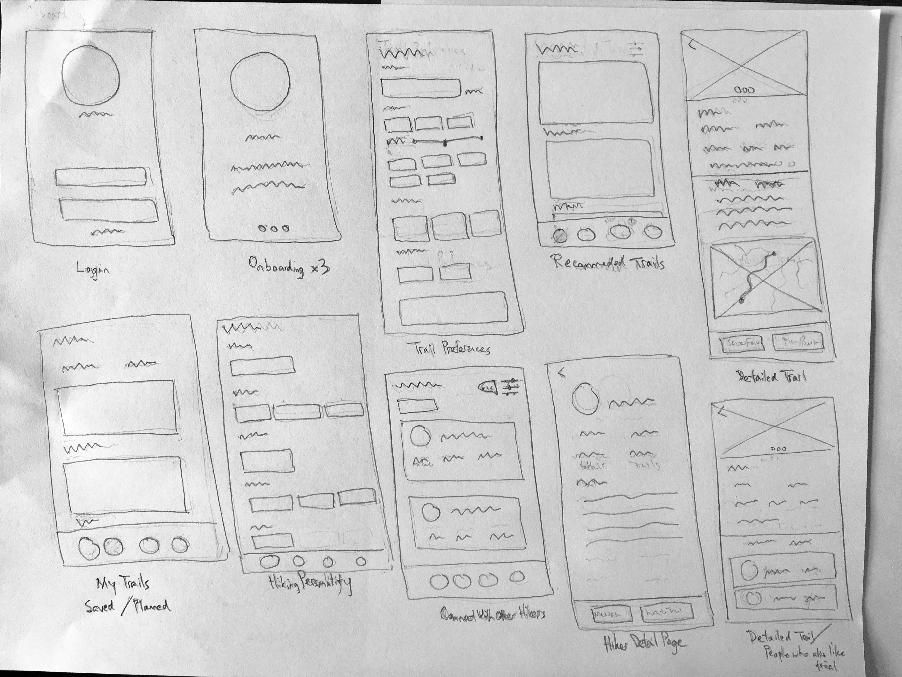

Showing nearby hiking trails and connecting users with one another
Problem This project was based on an assigned design exercise which asked me to create a prototype for an app called Hiker that finds nearby hiking trails based on preference. Moreover, a key feature of Hiker is allowing users to match and connect with other hikers who select similar trails.
I was asked to list major assumptions that would need to be true for the Hiker app to succeed and move forward from there.
Logistics
- Project Type: Interview Design Exercise
- Team: 1 Designer
- My Roles: Research, Interaction Design, Visual Design, User Testing
- Time Frame: 3 Days
After the interviews were analyzed, several key takeaways were noted:
- Trails are typically characterized by aspects such as distance, elevation gain, and terrain
- Hikers have unique "hiking personalities", and they typically look for hikers with a similar personality; characteristics of a "hiking personality" may include years of hiking experience and preferred pace
Lastly, several key assumptions were proposed. These assumptions would need to hold true in order for the Hiker app to be successful. The assumptions were:
- Users currently lack the resources to find local hikings trails of their liking
- Users view hiking as a social experience to be enjoyed with others
- When considering hiking companiions, users want to hike with others who prefer similiar routes
- Browsing nearby hiking trails and selecting one for a trip
- Connecting with other similar hikers who prefer the same trails
The next step of the design process was to create wireframes that represents the steps of the benchmark tasks.


After the wireframes were created, they were converted to high-fidelity mockup flows. Moreover, several addition secondary user tasks were added to support the benchmark tasks. Some of the secondary user tasks included:
- Keeping track of planned and saved trips
- Reaching out to other similar hikers in general

Finally, the mockups were linked together to create an interactive prototype. The prototype can be found below:
Quantitative data such as time to complete a task and overall task accuracy will be collected. Qualitative data such as the users' opinions, feelings, problems, and suggestions towards the prototype will recorded as well.
To test the validity of the assumptions, users will be asked to rate their level of agreeance for each assumption. They will then be asked to explain their decisions behind agreeing or disagreeing with each assumption.


Made with  by Jesse
by Jesse
by Jesse